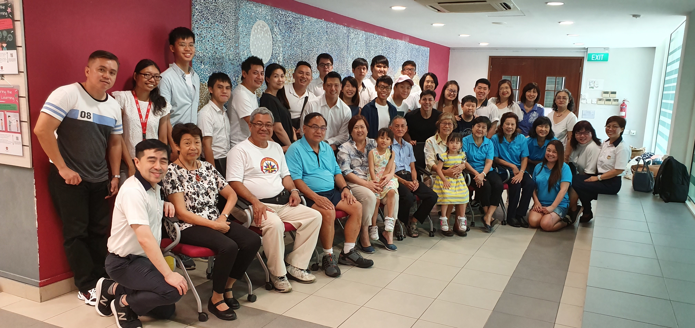
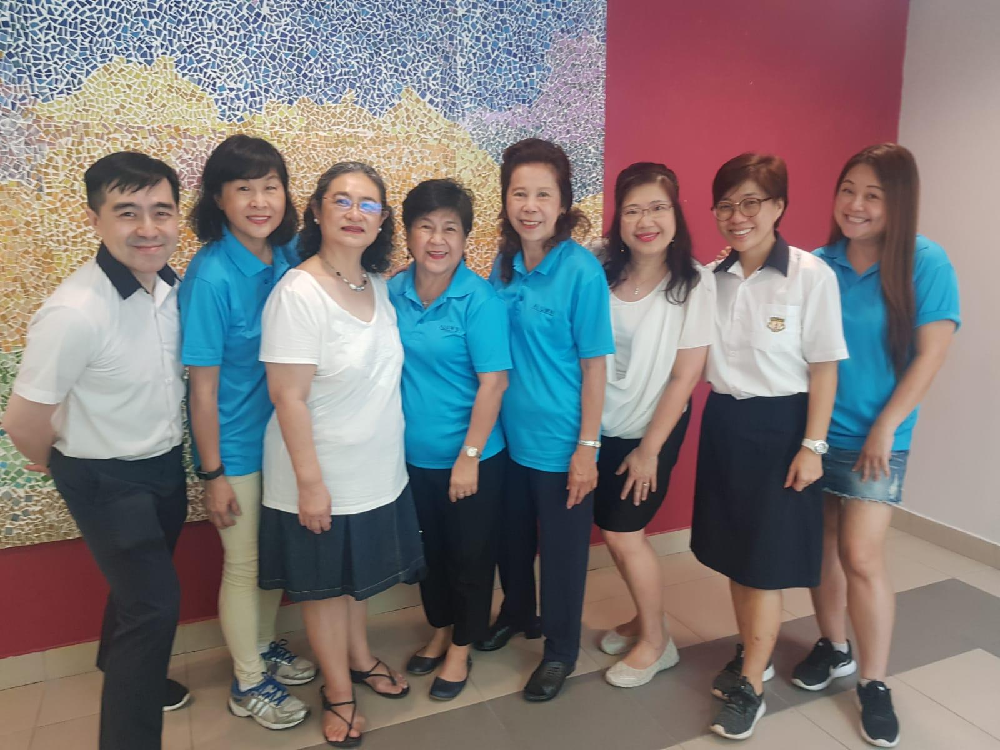

Belonging first
Lead with reunion, legacy, and shared memory before logistics.
Foundations · Friendship · Homecoming
A first landing-page concept for GMS Homecoming 2026 — designed to bring together alumni, families, staff, and friends of the Geylang Methodist School community.
Why this matters
Public alumni materials for GMS emphasize purposeful events, gratefulness, belonging, community outreach, and alumni service. This concept leans into that truth instead of making the page feel like a generic ticketing site.
The tone is warm, grounded, and intergenerational: not flashy, not corporate, not over-designed. The job of the page is simple — make people feel invited, informed, and ready to come back.
Lead with reunion, legacy, and shared memory before logistics.
One obvious action: get updates now, register when details are ready.
State what is known and what is not yet fixed. No fake certainty.
Ready for ticketing links, sponsor logos, memory gallery, and volunteer sign-ups.
Moments and memories
Instead of treating the homecoming like a sterile event signup, the page now uses publicly visible school and alumni imagery to create a more lived-in, homely feel.


Why images matter here
A school homecoming page should not feel like a generic campaign page. It should feel recognisable, affectionate, and rooted in real community memory.
These public-source images help create that tone now. Later, they should be replaced or supplemented with committee-approved hero photos, archival class shots, and official school-approved visuals.
Draft programme shape
This is a proposed layout only, based on typical alumni reunion flows. Replace once the organising committee confirms the real run-of-show.
Registration, coffee, school song, and reconnecting by cohort.
Photo moments, classroom stories, heritage corners, and old-school snapshots.
Opening remarks, alumni highlights, student performances, and community updates.
Table conversations, cohort photos, and space for teachers, alumni, and families to mingle.
Volunteer, mentoring, outreach, or fundraising call for the next chapter.
Community themes drawn from current GMS alumni messaging
The existing alumni association messaging speaks about enriching alumni connections, community engagement, fundraising, and outreach. That gives the page its backbone: the homecoming should feel like both reunion and renewal.
Reconnect with classmates, teachers, and the stories that still shape how you lead and serve today.
See the legacy behind the school community and be part of a day that honours generations.
Use this page as the single source for updates, registration, volunteers, sponsors, and event-day information.
Next action
For now, this section is intentionally honest: the site is ready, but the final registration endpoint, date, venue, ticket tiers, and organiser contact should be confirmed before launch copy is finalized.
FAQ
No. This is a live first version designed to move fast. It is suitable as a public teaser, but final operational details still need organiser confirmation.
The page tone and structure reflect public GMS alumni messaging: friendship, belonging, service, outreach, and meaningful alumni connection.
Confirmed date, venue, committee-approved copy, registration/payment flow, sponsor section, archival photos, and alumni contact details.
Yes. It is a static site. If you later need payments or a proper form, connect an external provider or move the backend elsewhere while keeping the front end here.